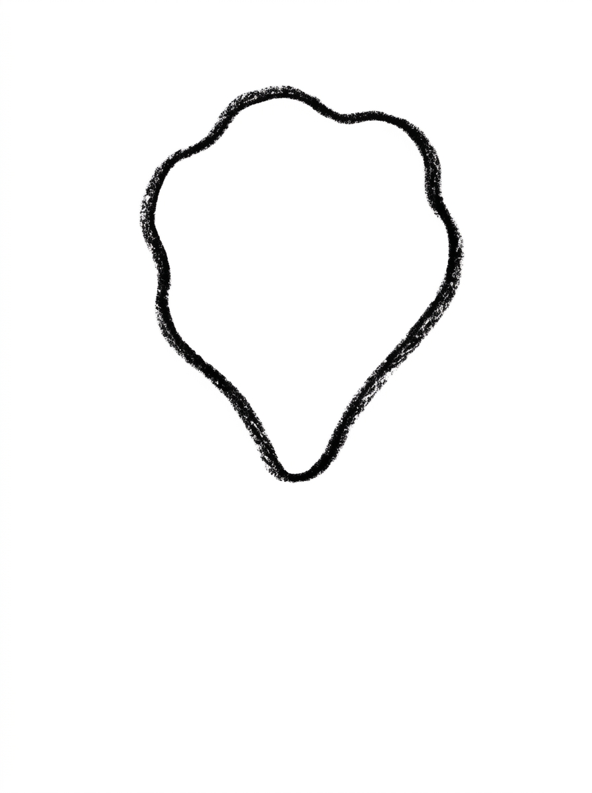
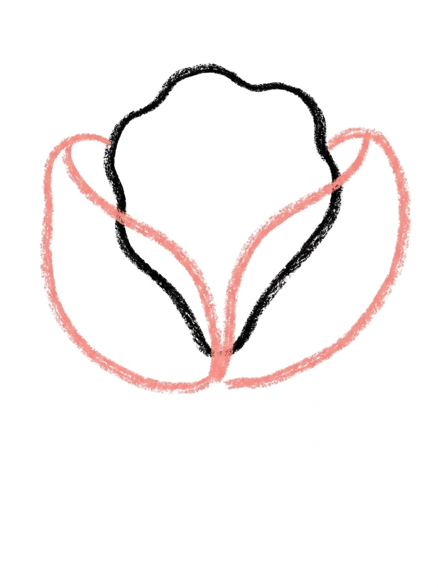
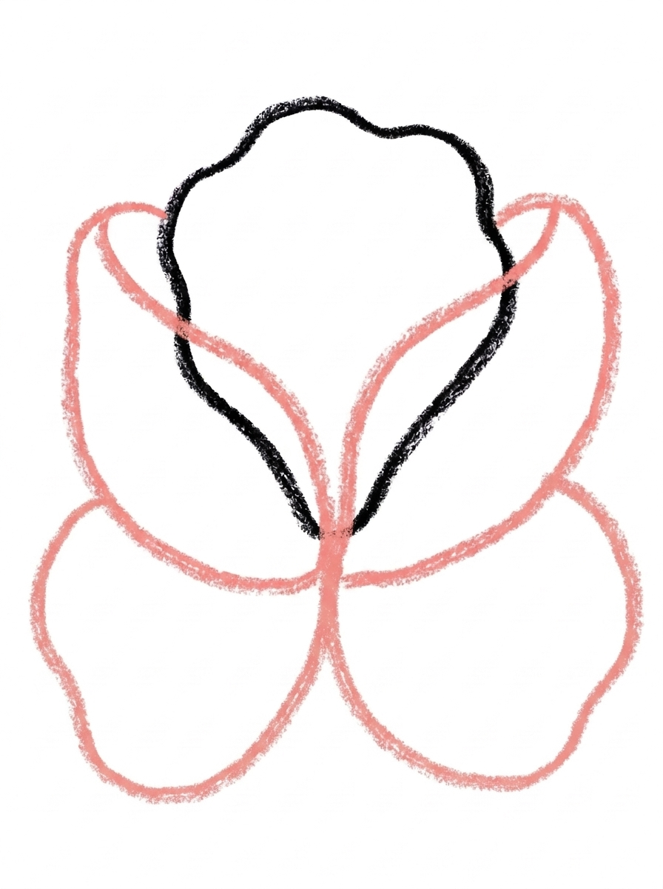
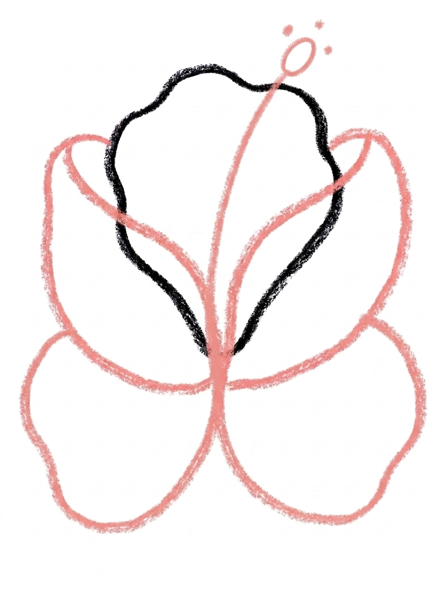
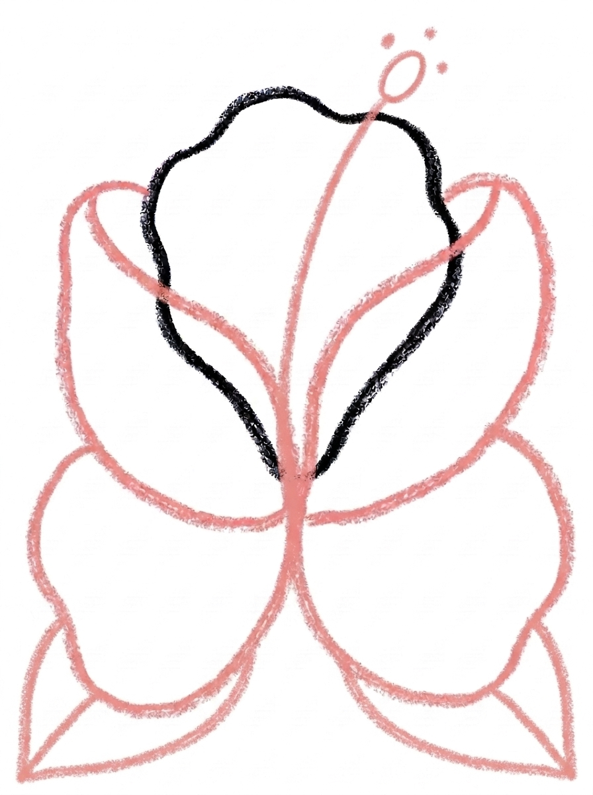
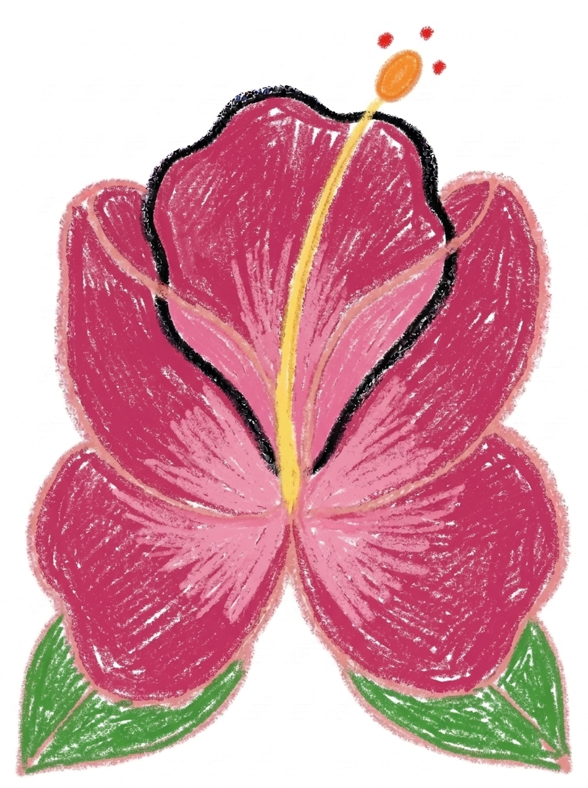

Hibiscus Drawing for Kids How to Draw A Hibiscus in 6 Easy Steps
Quick Answer
Draw five big teardrop petals with wavy edges — one on top, two at the sides, two at the bottom. Add the long curved stamen stalk with its oval tip and three dots, then two leaves underneath, and colour the petals deep pink. Made for ages 3 and up — no signup needed, just print and draw.
At a Glance
- Subject: How to draw a hibiscus
- Ages: 3+
- Steps: 6 steps
- Time: ~15 min
- Difficulty: Easy
- Supplies: Paper, crayons
The hibiscus is the big, breezy flower of summer — five wide petals and a long stamen that sticks right out. Kids enjoy that the petals are large and wavy, so there is no need to be neat, and the flower's signature stalk in the middle makes the finished drawing instantly recognisable.
✏️ Draw Your Hibiscus in 6 Easy Steps
One step per box — this step by step hibiscus drawing shows each new part in a different color so kids can see exactly what changed.
Step 1: The Top Petal

Draw one big petal shape at the top of your paper — a wide teardrop with a wavy edge. This is the hibiscus's top petal.
Step 2: The Side Petals

Draw two more big petal shapes, one on each side of the first petal, each one overlapping the first petal so all three petals touch.
Step 3: The Bottom Petals

Draw two more big petal shapes, one at the bottom left and one at the bottom right, each one overlapping the petal above it. Now your flower has five petals!
Step 4: The Stamen

Draw one long thin stalk curving up from the center of the flower, with one small oval at its tip and three tiny dots around the oval.
Step 5: The Leaves

Draw two pointed-oval leaf shapes below the flower, one on each side, each leaf touching the bottom petals.
Step 6: Color It In

Color your hibiscus! Deep pink for all five petals with lighter pink near the center, yellow for the stamen stalk, orange for the oval tip, red for the three tiny dots, and green for the leaves. Great drawing!
📊 Hibiscus Drawing by Age
Every age can join in — just adjust the job.
| Age | What they can do | Tip |
|---|---|---|
| 3-4 | Draw the big top petal and colour all five petals deep pink. | Wavy edges are forgiving — tell them the wobblier the edge, the more it looks like a real hibiscus petal. |
| 4-5 | Place all five petals around the flower — top, two sides, two bottom — with overlaps. | Use clock positions to help: one petal at the top, one each side, then fill the two bottom gaps. |
| 6+ | Draw the full flower including the curved stamen, its oval tip and the three tiny dots. | Challenge them to shade the petals lighter near the center, the way Step 6 shows, using a lighter touch with the crayon. |
🖨️ Download Your Free Hibiscus Drawing Printable
The printable lays out all 6 steps one per box, big enough for little hands — kids draw right alongside each step.
⬇️ Open Free Printable 🖨️ Print🎁 Free printable for ages 3+
🌺 Hibiscus Lei Garland
Hibiscus flowers are strung into leis in Hawaii, so turn this drawing into a garland: draw the hibiscus three or four times using the same six steps, colour each one a different colour — pink, red, orange, yellow — cut them out, and tape them along a ribbon or string. A row of kid-drawn hibiscus flowers makes a bright summer party decoration.
What You'll Need to Draw A Hibiscus
You need paper, a pencil and crayons or markers. For Step 6 keep deep pink and lighter pink for the five petals, yellow for the stamen stalk, orange for its oval tip, red for the three tiny dots, and green for the leaves. Red, orange or yellow petals work for variations, since real hibiscus flowers come in all of those colours.
What They're Learning
This tutorial practices the wide teardrop with a wavy edge — the petal shape — repeated five times in a ring, plus overlapping shapes, since every petal tucks over the one beside it. Kids also practice placement (top, sides, bottom), counting to five, a long curved line for the stamen, and the pointed oval for the leaves.
Make It Yours
Once the hibiscus is drawn, try: petals in red, orange or sunny yellow, a whole hibiscus bush with three flowers and extra leaves, a tiny version tucked behind a drawn ear like a hair flower, or a second flower in a paler colour behind the first for a tropical bouquet.
🛒 Our Favorite Drawing Supplies
These are the supplies we reach for in our own home — washable (because kids), quality paper, and enough colors to avoid fights.
As an Amazon Associate, MomYouNeedThis earns from qualifying purchases — at no extra cost to you.
💡 Hibiscus Flower Drawing Tips for Parents
The step parents most often need to coach is the petal placement in Steps 1 to 3: top first, then the two sides, then the two bottom petals, each one overlapping its neighbour. Overlapping is the skill here — if a petal floats on its own, gently show how it should tuck behind the petal next to it.
Step 4's stamen is the hibiscus's signature — a long thin stalk curving up out of the center with a small oval tip. If your child's stalk comes out short or straight, it is still correct enough; but a nice long curve is what makes visitors say 'that's a hibiscus!' — worth one practice line on scrap paper.
🌺 Hibiscus in the Real World
Hibiscus flowers are giants of the flower world — some blooms grow wider than a dinner plate. They open in the morning and each flower lasts only about a day, but the bush makes so many buds that nobody notices the turnover. Hibiscus is the state flower of Hawaii and the national flower of Malaysia, and its petals are used to make a deep-red tea enjoyed around the world.
The long stamen stalk poking out of the middle — the part this drawing saves for step four — is the flower's way of offering pollen to visiting bees and hummingbirds. Ask your child what color theirs is blooming: hibiscus comes in red, pink, orange, yellow, and white, so the crayon choice is botany, not decoration.
✋ Warm-Up: Petal Teardrops
Warm up with the petal itself: a wide teardrop with a slightly wavy edge. Draw one, then a ring of five around an imaginary center, letting the edges kiss. Do it twice on scrap paper — the second ring is always better, and knowing that in advance is a young artist's superpower.
Petals that overlap unevenly are doing exactly what flower petals do. The fix that matters is a gap in the ring: fill it with one more small petal rather than stretching the others. Real hibiscus hides its gaps the same way — with more petals.
📖 Give Your Hibiscus a Story
A flower that lasts one day has an urgent little story. Who is this hibiscus blooming for — a bee on a schedule, a gardener, a lei maker gathering flowers for a celebration? A dictated sentence under the drawing gives the bloom its big day, and one-day wonders make surprisingly dramatic heroes.
The sakura tutorial is the hibiscus's spring cousin — another five-petal flower, built in a completely different way. Drawing both teaches your child that flowers share a plan and differ in the details, which is the whole of botany in one afternoon.
❓ Hibiscus Drawing FAQs
What is the easiest way to draw a hibiscus flower?
Draw five big teardrop petals with wavy edges in a ring — top, two sides, two bottom — then add the long curved stamen stalk in the center. This tutorial builds the flower in exactly that order across six steps.
What age is this hibiscus drawing for?
It is made for ages 3 and up. Younger kids can draw the big petals and colour them, while older children handle the overlapping petals, the stamen dots and the two-tone petal colouring themselves.
What supplies do we need to draw a hibiscus?
Paper, a pencil and crayons or markers are all you need. For Step 6, have deep pink, lighter pink, yellow, orange, red and green ready.
Is the hibiscus drawing printable really free?
Yes — every printable on MomYouNeedThis is 100% free to download and print. No signup, no payment, just tap the download button.
How do I print the hibiscus drawing tutorial?
Open the PDF and print at 100% scale, not 'fit to page', so the six step pictures print at their designed size. Your child can work through them in order beside their own sheet of paper.
How many petals does a hibiscus have in this drawing?
Five — one on top, one on each side and two at the bottom, each overlapping the petal beside it. Real hibiscus flowers also have five petals, so the drawing matches the real flower.
What is the long stalk in the middle of the hibiscus?
That is the stamen — the part of the flower that carries pollen. On a hibiscus it sticks far out of the center and ends in a small oval tip with dots, which is why Step 4 draws it curving up and out.
Can my child colour the hibiscus a different colour?
Yes — real hibiscus flowers come in red, orange, yellow, white and many shades of pink. The steps stay the same; just swap the deep pink in Step 6 for any of those colours.
📚 Keep Exploring
- ✏️ All 76 Drawing Tutorials 76 free step-by-step drawing tutorials for kids.
- 🌸 Spring Coloring Free printable spring coloring pages for kids, including a flower garden design.
- ✏️ Drawing Practice Free printable drawing pre-writing worksheet for toddlers.